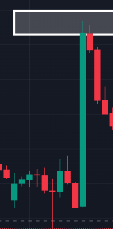

SK Strategy
Introduction to SK Strategy
Definition: The SK Strategy is a trading approach that combines elements of technical analysis and fundamental analysis to identify high-probability trading opportunities. It emphasizes strategic planning, risk management, and discipline.
Objective: The primary goal of the SK Strategy is to achieve consistent profits by leveraging market trends and patterns while minimizing risk through disciplined trading practices.
Core Components of SK Strategy
Market Analysis: Conduct thorough market analysis to understand the current market conditions. This includes analyzing price charts, indicators, and economic news to identify potential trading opportunities.
Entry and Exit Points: Define clear entry and exit points based on technical and fundamental criteria. This helps in making informed decisions and avoiding impulsive trades.
Risk Management: Implement robust risk management techniques to protect capital. This includes setting stop-loss orders, position sizing, and managing the risk/reward ratio.
Trade Management: Monitor open positions actively and make adjustments as needed. This involves moving stop-loss orders to break-even, scaling out of positions, and taking profits at predetermined levels.
Technical Analysis in SK Strategy
Chart Patterns: Identify and utilize common chart patterns such as head and shoulders, double tops/bottoms, and triangles to predict future price movements.
Indicators: Use technical indicators like moving averages, RSI (Relative Strength Index), MACD (Moving Average Convergence Divergence), and Bollinger Bands to gain insights into market trends and momentum.
Trend Analysis: Determine the direction of the prevailing trend and align trades accordingly. This involves analyzing trend lines, support and resistance levels, and moving averages.
Fundamental Analysis in SK Strategy
Economic Indicators: Monitor key economic indicators such as GDP, unemployment rates, inflation, and interest rates. These indicators provide insights into the overall health of the economy and potential market movements.
News and Events: Stay updated with major news events and economic releases that can impact the market. This includes central bank announcements, geopolitical developments, and corporate earnings reports.
Steps to Implement SK Strategy
IMPULSIVE
CORRECTIVE
SIDE CORRECTIVE

How to draw the SEQUENCE
1/ You need to see a bullish wave and then it's correction.
2/ Draw the resistance
3/ Draw the fib retracement ( draw it from the bottom of the candle to the top of it until it reach's the resistance ).
4/ The 4 green lines we call that the GOLDEN ZONE
5/ Draw the GOLDEN ZONE
6/ Now draw the SEQUENCE (0.A.B.C).
7/ Now draw the trend-base fib extension (draw it from the bottom of the candle to the resistance and extend it to the GOLDEN ZONE down )
Draw the rectangle in the levels of 1.6 , 1.8 AND 2
IT MAY HAPPEN
Before the chart goes to the C level it may happen a correction
FOR MORE DETAILS ORDER OUR BOOK NOW
Benefits of SK Strategy
Consistency: By following a structured approach, the SK Strategy helps in achieving consistent trading performance and reducing emotional biases.
Risk Management: The strategy emphasizes robust risk management techniques, ensuring that potential losses are minimized and capital is protected.
Comprehensive Analysis: Combining technical and fundamental analysis provides a comprehensive view of the market, increasing the probability of identifying high-quality trading opportunities.
Challenges in SK Strategy
Market Volatility: Markets can be highly volatile and unpredictable, posing challenges to the effectiveness of the strategy. Traders must be prepared for sudden market movements and adapt accordingly.
Discipline: Maintaining discipline and sticking to the trading plan can be challenging, especially during periods of market turbulence. Traders must remain focused and avoid impulsive decisions.
Practical Example
Example Strategy: Moving Average Crossover with Economic News Filter
Market: EUR/USD
Time Frame: 1-hour chart
Entry Criteria:
- Enter a buy trade when the 50-period moving average crosses above the 200-period moving average.
- Ensure that there are no major economic news releases that could impact the trade within the next hour.
Exit Criteria:
- Exit the trade when the moving averages cross in the opposite direction or a major economic news release is scheduled.
Risk Management:
- Set a stop-loss order 20 pips below the entry price for buy trades and 20 pips above the entry price for sell trades.
- Risk no more than 2% of the trading account on each trade.
Profit Target:
- Take profit at 40 pips or adjust based on market conditions and upcoming news events.